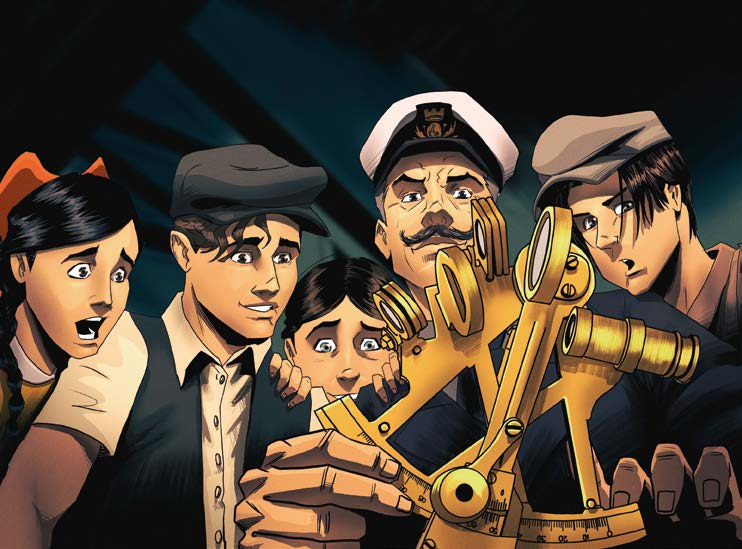

El capitán asiente.
—Parece que les llama la atención todo esto.
Muy bien.
Aquí vamos: el astrolabio, la brújula, el cuadrante, el sextante y, naturalmente, los mapas.
Antiguamente, los primeros navegantes —los fenicios, los vikingos, por ejemplo— se guiaban por las estrellas, la Estrella Polar.
Seguimos esa tradición.
Sin el mapa de las estrellas, nos sentiríamos perdidos o solos.
Sí, creo que más que perdidos, nos sentiríamos solos entre el cielo y el mar.
Luego manipula los instrumentos y les muestra cómo se usan.
Javier y Federica están extasiados.
Todo esto está expuesto en el Museo Nacional de Navegación, en la avenida